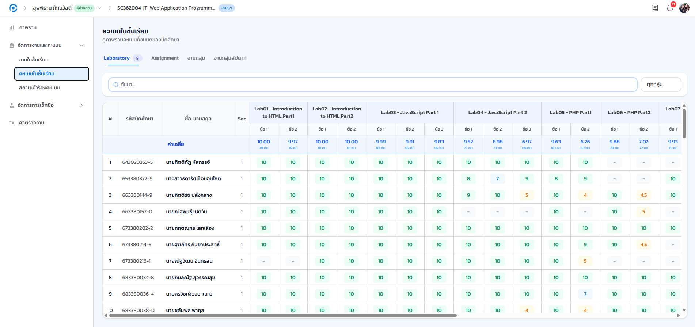
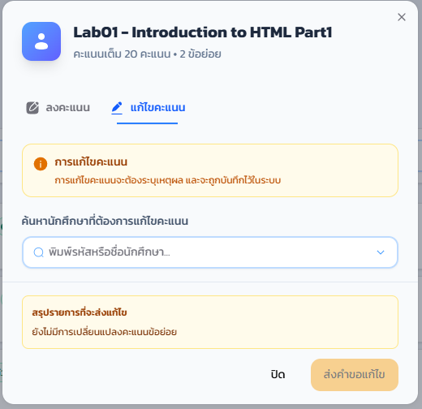
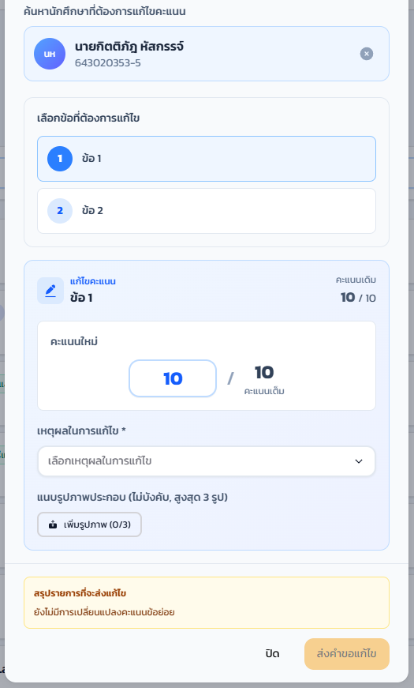
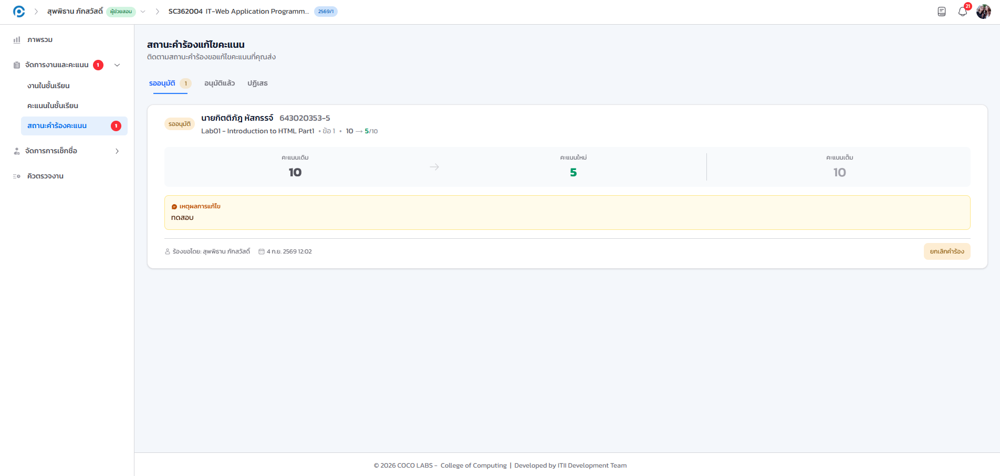

17.1 การให้คะแนนในชั้นเรียน#
เป้าหมายของขั้นตอนนี้ บันทึกคะแนนงานของนักศึกษาแต่ละคนผ่านตารางคะแนนรวม เมื่อได้รับสิทธิ์ให้คะแนน
- เข้าเมนู จัดการงานและคะแนน > คะแนนในชั้นเรียน (ปรากฏเฉพาะเมื่อได้รับสิทธิ์ให้คะแนน)
- เลือกประเภทงานจากแท็บด้านบน (Laboratory / Assignment / งานกลุ่ม) ระบบจะแสดง ตารางคะแนนรวม ของนักศึกษาทุกคน พร้อมค่าเฉลี่ยของแต่ละข้อ
- คลิกที่ ช่องคะแนน ของนักศึกษาแต่ละคน ช่องจะเปลี่ยนเป็นแบบแก้ไขได้ พิมพ์คะแนนแล้วระบบจะบันทึกให้ทันที


- การให้คะแนนแบบกลุ่ม/หลายคนพร้อมกัน
- ให้คะแนนนักศึกษาทั้งกลุ่มในครั้งเดียว เมื่องานนั้นเป็นงานกลุ่ม
- ช่องค้นหานักศึกษา
- กรองตารางเหลือเฉพาะรายชื่อที่ต้องการ
- รายการที่ยังไม่ได้ให้คะแนน
- รวมงานของนักศึกษาที่ยังตกหล่นไว้ในที่เดียว เพื่อไม่ให้ลืมตรวจ
เมื่อพิมพ์คะแนนแล้วออกจากช่อง ตัวเลขจะแสดงเป็นค่าที่บันทึกแล้วทันที โดยไม่ต้องกดปุ่มบันทึกแยกต่างหาก
17.2 การให้คะแนนงานข้ามวิชา (คิวจับคู่ข้ามวิชา)#
เป้าหมายของขั้นตอนนี้ เข้าใจว่าทำไมให้คะแนนงานของวิชาที่ไม่มีสิทธิ์สมาชิกโดยตรงได้ เมื่อรับงานผ่านคิวจับคู่ข้ามวิชา
เมื่อท่านตรวจงานที่มาจากอีกรายวิชาหนึ่งในคิวจับคู่ข้ามวิชา (อธิบายไว้ในบทที่ 16) การบันทึกผลและให้คะแนนจะทำผ่านช่องทางที่ผูกกับ การจองคิวรายการนั้นโดยตรง แทนที่จะดึงจากข้อมูลคะแนนของรายวิชาที่ท่านเป็นสมาชิกตามปกติ เนื่องจากท่านไม่มีสิทธิ์สมาชิกในวิชาต้นทาง ระบบจึงต้องยึดสิทธิ์จากการเป็นผู้ตรวจของคิวนั้นแทน
- เปิดหน้าต่างให้คะแนนตามปกติจากหน้ารับงาน แถบเตือนด้านบนจะแจ้งชื่อวิชาต้นทางและชื่องานที่กำลังตรวจอีกครั้ง
- กรอกคะแนนและกด เสร็จสิ้น เหมือนงานปกติทุกประการ ไม่ต้องสลับไปเมนูคะแนนของวิชาอื่นหรือทำขั้นตอนเพิ่มเติมใด ๆ
ภาพชั่วคราว รอถ่ายจริง (ยืมภาพการแก้ไขคะแนนปกติมาประกอบ)
ในทางปฏิบัติ การให้คะแนนงานข้ามวิชาหน้าตาและขั้นตอนเหมือนการให้คะแนนปกติทุกประการ ท่านไม่จำเป็นต้องทำสิ่งใดแตกต่างออกไป ความแตกต่างอยู่ที่การทำงานเบื้องหลังของระบบเท่านั้น ซึ่งอธิบายไว้ที่นี่เพื่อให้เข้าใจว่าทำไมท่านให้คะแนนวิชาที่ไม่มีสิทธิ์สมาชิกได้
17.3 การขอแก้ไขคะแนนและติดตามสถานะ#
เป้าหมายของขั้นตอนนี้ ส่งคำขอแก้ไขคะแนนที่บันทึกไปแล้ว เมื่อไม่มีสิทธิ์แก้ไขโดยตรง และติดตามผลการพิจารณา
- ที่ตารางคะแนน คลิกคะแนนที่ต้องการแก้ไขแล้วเลือก ส่งคำขอแก้ไขคะแนน
- ระบุ คะแนนเดิม คะแนนใหม่ และเหตุผล ให้ครบ แนบรูปประกอบได้หากมี แล้วส่งคำขอไปให้อาจารย์พิจารณาอนุมัติ

- เข้าเมนู จัดการงานและคะแนน > อนุมัติคะแนน เพื่อติดตามสถานะคำขอของตนเอง
- สลับดูตามแท็บ รออนุมัติ / อนุมัติแล้ว / ปฏิเสธ

การให้คะแนนและการขอแก้ไขคะแนนทุกครั้งจะถูกบันทึกในบันทึกกิจกรรมของรายวิชา และแสดงในสถิติผู้ช่วยสอน ซึ่งอาจารย์ใช้ติดตามและประเมินผลงานของผู้ช่วยสอนแต่ละคน (ดูบทที่ 13)